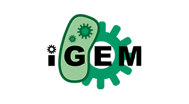
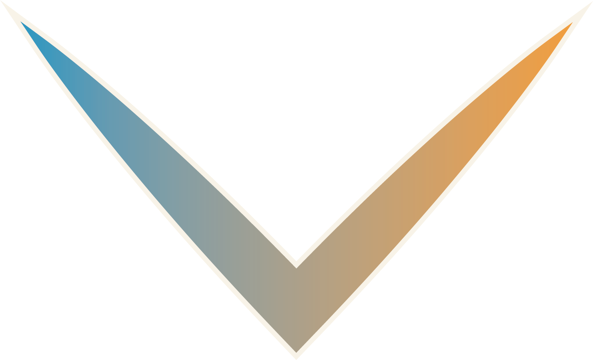

Go directly to the map !

iGEM IONIS
Is an association created by Sup’Biotech students in 2015 to attend the iGEM competition. Since this first participation, two teams (2015 and 2016) won the gold medal and several nominations: “Best presentation”, “Best applied design”, and “Best environmental project”.
The strength of the iGEM IONIS 2017 team comes from its multidisciplinarity and its complementarity.
This year 2017, we are 20 members from different schools:
• 18 students from Sup’Biotech
• 1 student from E-art Sup
• 1 student from Epita